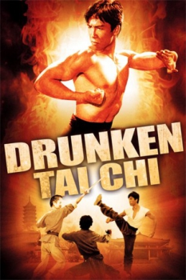
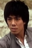

Also known as:笑太極 (original title)
Country:Hong Kong, 91 minutes
Spoken languages:Cantonese, Mandarin
Genres:Action, Comedy
Director(s):Yuen Woo-Ping
Writer(s):
Video Codec:Unknown
Number: 2710


Certification:
Storyline:
A spoiled young man - on the run from a ruthless killer - hooks up with a puppeteer and his wife who are masters of the art of tai chi; the only style that can defeat the killer.
Cast: 
Medium: Original DVD,
Comments: Part of: Flying Fists of Kung Fu - 12 movie set
Loaned: No
Aspect ratio: Unknown